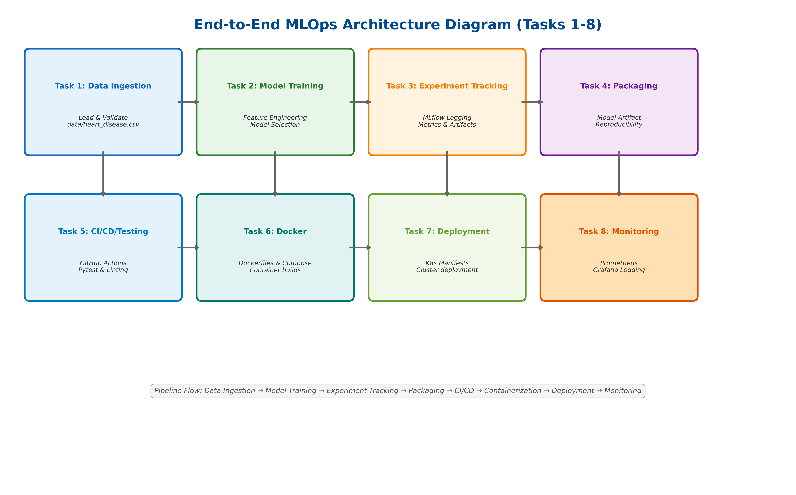

This submission contains the complete end-to-end solution for the MLOps assignment using the repository below.
Title: End-to-End MLOps Project for Heart Disease Prediction
Problem Statement: Build a machine learning classifier to predict heart disease risk from patient health data and deploy it as a production-ready monitored API.
Detailed Architecture Flow

Shows the complete pipeline flow with all 8 tasks connected in sequence: Data Ingestion → Model Training → Experiment Tracking → Packaging → CI/CD → Containerization → Deployment → Monitoring
Status: The project is implemented, documented, and ready for submission with source code, deployment manifests, tests, and reporting artifacts.
https://github.com/hryogesh/MLOps_HeartDisese
Initialize a Python virtual environment, install required packages, and prepare the dataset.
python3 -m venv .venv
source .venv/bin/activate
pip install -r requirements.txt
python scripts/download_dataset.pyVerify that the cleaned dataset exists at data/heart_disease.csv and inspect its contents.
python - <<'PY'
from src.data.load_data import load_dataset
df = load_dataset(path='data/heart_disease.csv')
print(df.head())
print(df.shape)
print(df.isnull().sum())
PY(303, 14)ca has 4 missing values and thal has 2 missing valuesthalach and targetRecommended EDA commands:
python - <<'PY'
from pathlib import Path
import pandas as pd
import matplotlib.pyplot as plt
import seaborn as sns
from src.data.load_data import load_dataset
df = load_dataset(path='data/heart_disease.csv')
print('Shape:', df.shape)
print(df.isnull().sum())
sns.countplot(data=df, x='target')
plt.title('Class Distribution')
plt.show()
numeric_cols = df.select_dtypes(include='number').columns.tolist()
for col in numeric_cols:
plt.figure(figsize=(6, 4))
sns.histplot(df[col], kde=True, bins=20)
plt.title(f'{col} Distribution')
plt.show()
plt.figure(figsize=(12, 10))
sns.heatmap(df[numeric_cols].corr(), cmap='coolwarm', annot=False)
plt.title('Correlation Heatmap')
plt.show()
PYPreprocess features, run model comparisons, and choose the best model.
python - <<'PY'
from src.data.load_data import load_dataset
from src.features.preprocess import prepare_features
from src.models.model_comparison import compare_models
df = load_dataset(path='data/heart_disease.csv')
prepared = prepare_features(df)
print(prepared['X_train'].shape, prepared['X_test'].shape)
comparison = compare_models(df)
print(comparison['best_model'])
print(comparison['results'])
PYTrain the model while logging metrics and parameters to MLflow.
python -m src.train
mlflow ui --host 127.0.0.1 --port 5000Open http://127.0.0.1:5000 to view MLflow runs.
Validate the model packaging and inference logic using a sample prediction request.
python - <<'PY'
from src.models.predict import predict
result = predict([63.0, 1.0, 1.0, 145.0, 233.0, 1.0, 2.0, 150.0, 0.0, 2.3, 3.0, 0.0, 6.0])
print(result)
PYRun linter checks and execute unit tests to ensure code quality and reliability. The repository also includes a GitHub Actions CI workflow that runs the same checks automatically on every push and pull request to main.
python -m pip install --upgrade pip
python -m pip install -r requirements-dev.txt
python -m pip install ruff
ruff check .
python -m pytest tests -qTo validate the CI workflow locally, ensure the tests pass first and then push your changes. The GitHub Actions workflow is defined in .github/workflows/ci.yml and includes:
If the repository is connected to GitHub, open the Actions tab to view the CI run status after pushing changes.
Build and run the API using Docker Compose. This packages the application into containers.
docker compose -f docker/docker-compose.yml up --buildOpen the API documentation at http://127.0.0.1:8000/docs.
Use the end-to-end script to run Docker Compose or Kubernetes deployment
./scripts/run_end_to_end.sh --detach --streamlit
./scripts/run_end_to_end.sh --k8s --streamlitThe Kubernetes helper builds images and applies the manifest to a local cluster.
Start Prometheus and Grafana to collect and visualize API metrics.
docker compose -f monitoring/docker-compose.monitoring.yml up --buildOpen dashboards at:
This submission document covers the full MLOps assignment workflow from Task 1 through Task 8. It includes data ingestion, model training, experiment tracking, packaging, CI/CD, deployment, and monitoring with direct repository file references and runnable commands.